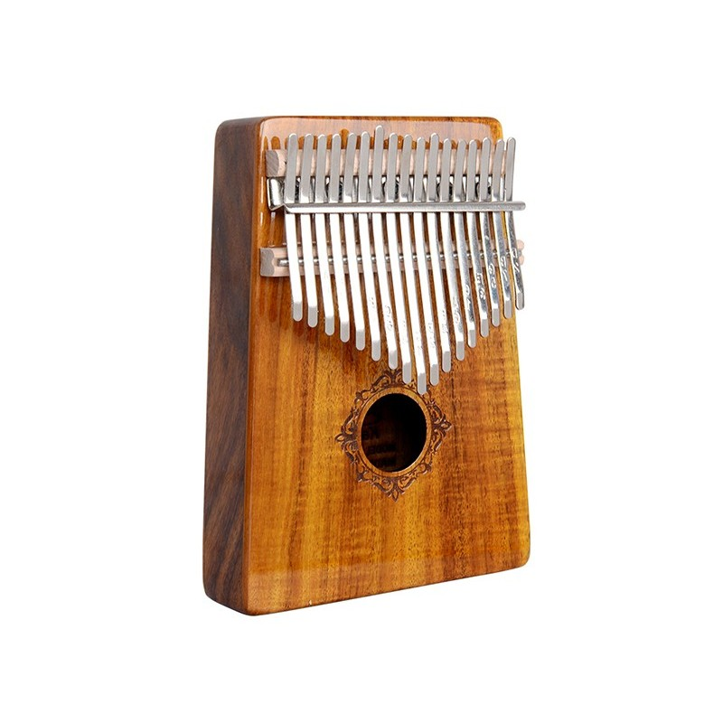

Калимба
Калимба, также известная как мбира, - это удивительный музыкальный инструмент, исходящий из богатой музыкальной культуры Африки и Азии. Этот инструмент поражает своим уникальным и мелодичным звучанием, делая его популярным среди музыкантов и слушателей по всему миру.
Калимба представляет собой набор металлических листов, закрепленных на деревянной основе. Металлические листы разных размеров создают разнообразные звуки, когда музыкант использует пальцы для нажатия на них. Звуки, издаваемые калимбой, напоминают звучание капель дождя или колокольчиков ветра, что создает неповторимую атмосферу спокойствия и блаженства.
Калимба используется как сольный инструмент, так и для сопровождения других музыкальных инструментов. Ее мягкий и умиротворяющий звук часто находит применение в медитативной и релаксационной музыке. Она также популярна среди музыкантов, ищущих уникальное звучание для своих произведений.
Этот инструмент глубоко связан с культурой и традициями Африки, и его мелодии часто рассказывают о жизни и истории этого континента. Калимба - это не только музыкальный инструмент, но и символ мира и гармонии, способный соединить людей вокруг прекрасных звуков и мелодий.
Играя на калимбе, музыканты могут выразить свои чувства и эмоции, а слушатели могут найти умиротворение и вдохновение. Этот инструмент приглашает нас на удивительное музыкальное путешествие и позволяет открыть для себя новые грани звучания и музыкального искусства.